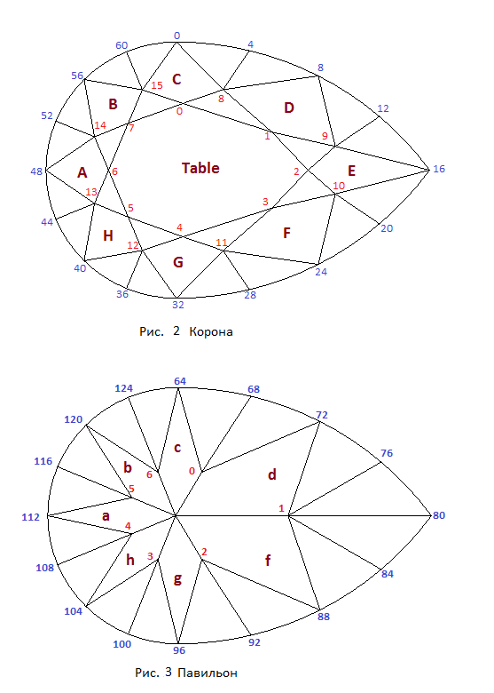

В данном разделе мы создадим модель огранки, которая носит название груша.
Огранки типа груша обычно имеют одинаковую форму короны, но могут различаться количеством основных граней павильона и их расположением (рис.1). В этой главе рассматривается построение огранки груша с шестью основными гранями павильона. По ссылке Pear - Light Dispersion можно увидеть многогранник "груша" отображенный при помощи кубических карт. При нажатии на приведенной по ссылке странице кнопки Inverse многогранник отобразится на черном фоне.
На рисунке 2 приведена нумерация вершин короны, а на рисунке 3 - павильона.

var lw = 1.5; // Отношение длины огранки к ее ширине
// Форма и толщиа рундиста
var r = 0.04; // Толщина рундиста
var vp = 0.000010; // Угол, определяющий величину отклонения кривой от окружности
var Lh = 0.34; // Отклонение смещения самого широкого места рундиста
var square_deviation = 0; // Степень отклонения рундиста от эллипса
// Корона
var beta = 35*DEGREE; // Угол короны
var t = 0.6; // Ширина площадки
var dSquare = 0.00001; // Задает положение средних вершин короны.
var vLh = 0.00001; // Определяет смещение центральной точки огранки
// Павильон
var hp = 0.44; // Задает глубину павильона
var hPavFacet = 0.8; // Определяет положение нижних вершин клиньев павильона
var CuletX = 0.00001; // Смещение калетты вдоль оси X
var CuletY = 0.00001; // Смещение калетты по оси Y
// Следующие параметры задают положение узловых вершин на рундисте
// Они подробно рассмотрены в разделе, где рассматривается построение
// рундиста огранки груша.
var DelAngGirdle_4 = 0; // вершины рундиста 44, 52, 108, 116
var DelAngGirdle_8 = 0.0*DEGREE; // вершины рундиста 40, 56, 104, 120
var DelAngGirdle_12 = 0.0*DEGREE; // вершины рундиста 36, 60, 100, 124
var DelAngGd_16 = -2.0*DEGREE; // вершины рундиста 0, 32, 64, 96
var DelAngGirdle_20 = 0.0*DEGREE; // вершины рундиста 4, 28, 68, 92
var DelAngGirdle_24 = 0.0*DEGREE; // вершины рундиста 8, 24, 72, 88
var DelAngGirdle_28 = 0.0*DEGREE; // вершины рундиста 12, 20, 76, 84
Построение рундиста подробно рассмотрено в предыдущем разделе. Однако, после того как он был расчитан, мы развернули его в горизонтальной плоскости таким образом, чтобы основной диаметр рундиста был направлен вдоль оси Y (разворот на 90°). Таким образом, например, вершина рундиста 16 из предыдущей главы превратилась в вершину рундиста с номером 0.
Внешний вид павильона и короны огранки а также нумерация их вершин показана на рисунках 2 и 3 соответственно.
Построение короны и павильона огранки во многом подобно построению короны и павильона огранки бриллиант.
Отличием является то, что в огранке бриллиант павильон имеет восемь основных четырехугольных граней,
а у огранки груша таких граней всего семь.
В огранке груша введен специальный параметр vLh, который имеет соответствующее поле vLh в СДМ.
Этот параметр позволяет одновременно целиком сдвигать корону и павильон огранки вдоль оси OX.
Так как огранка не симметрична относительно вертикальной плоскости OYZ, то такой сдвиг часто полезен
при выборе подходящей формы огранки.
Для того чтобы при изменении удлинения огранки грани B, C и D короны по форме
приближались к ромбу поступим следующим образом. После расчета положения всех вершин короны тем же способом,
что был использован для этой цели в огранке бриллиант, производится корректировка положения вершин
7, 0 и 1 короны (рис.2). Данная корректировка осуществляется следующим способом.
Через середину отрезка соединяющего вершины 14 и 15 короны проводится вертикальная плоскость.
Новое положение вершины 7 находится как точка пересечения проведенной вертикальной плоскости,
плоскости в которой лежит грань B и плоскости которой принадлежит площадка.
Точно таким же образом производится корректировка положения вершин 0 и 1 короны.
Исходный текст расчета вершин многогранника находится в файле pear_verts.js.